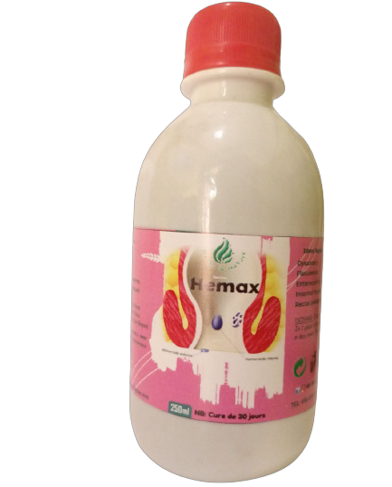

Les hémorroïdes sont des veines qui forment des coussinets au niveau du canal anal, dont le rôle est d’assurer la continence anale fine.
On distingue les hémorroïdes externes, localisés sous la peau autour de l’anus, et les hémorroïdes internes, localisés à l’intérieur du canal anal.
La maladie hémorroïdaire (couramment appelée hémorroïdes) peut entraîner des crises douloureuses lors de l'inflammation et la dilatation excessive des veines hémorroïdaires autour de l’anus. La constipation en est la principale cause car elle entraîne des efforts de poussée répétés pour l’évacuation des selles. Certains aliments semblent favoriser les crises, notamment les viandes, les plats épicés, le café, le thé, les colas et divers alcools. Une alimentation pauvre en fibres et une hydratation insuffisante provoquent le durcissement des selles, et rendent leur évacuation problématique.
Quels sont les symptômes des hémorroïdes ?
Les symptômes de la maladie hémorroïdaire sont variables selon les personnes et selon la localisation des hémorroïdes. Ils peuvent survenir soit sous forme de crise hémorroïdaire aiguë, soit de façon continue. La crise hémorroïdaire se manifeste par de vives douleurs, des saignements plus ou moins visibles, éventuellement la sortie hors de l’anus des hémorroïdes internes. Elle peut se compliquer de thrombose hémorroïdaire.
- Les douleurs de la crise hémorroïdaire
Les crises d’hémorroïdes externes se traduisent par l’apparition d’une petite boule juste au bord de l’anus, de la même couleur que la peau. La formation de ce caillot occasionne souvent de vives douleurs, car la paroi de l’anus, très irriguée et innervée, est extrêmement sensible. Les crises d’hémorroïdes internes ne sont habituellement pas douloureuses.
- Les saignements lors des hémorroïdes
Les hémorroïdes étant des vaisseaux sanguins très superficiels, les saignements sont fréquents. Ceux dus aux hémorroïdes internes sont plutôt des saignements discrets, généralement visibles uniquement sur le papier toilette, pendant ou après les selles.
- Le prolapsus hémorroïdaire
Lorsque les hémorroïdes internes sont très dilatées, elles peuvent apparaître hors de l’anus, notamment lors des poussées : c’est le prolapsus hémorroïdaire. Il peut provoquer des irritations, des démangeaisons ou une envie fréquente d’aller à la selle, sans résultat.
AVEC VOS 3 FLACONS D'HEMAX, ELABORES DES EXTRAITS DE PLANTES MEDICINALES, FINIT VOTRE MAL D'HEMOROIDE.